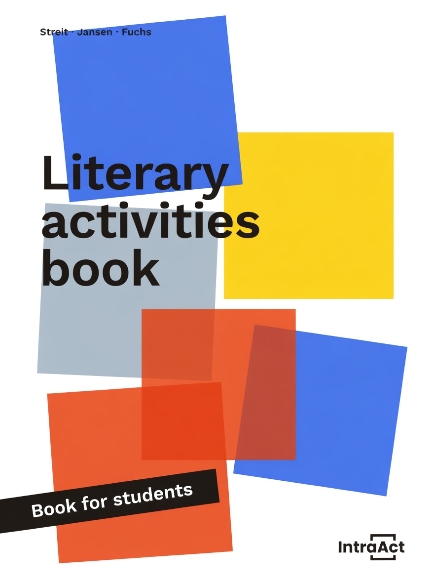

The scientific foundation and proven results behind the IntraAct literacy method.
The IntraAct method is built on decades of cognitive psychology, neuroscience, and learning science showing how the brain develops fast, automatic decoding as the foundation for reading.
Developed by Uta Streit and Fritz Jansen, based on research in attention, automaticity, and neuroplasticity—training the brain to build rapid, accurate decoding pathways.
Fully aligned with the "Big Five": phonemic awareness, phonics/decoding, fluency, vocabulary, and comprehension.
Consistent with the evidence that explicit, systematic, and structured instruction is essential for all learners—especially those who struggle.
Research consistently demonstrates that explicit, systematic phonics instruction leads to significantly better reading outcomes than implicit or embedded approaches, especially for struggling readers.
When word recognition becomes automatic through practice, students can devote cognitive resources to understanding meaning. Guided oral reading with feedback has been shown to improve fluency significantly.
Immediate corrective feedback during reading practice helps students develop accurate decoding habits and prevents the reinforcement of errors, leading to faster skill acquisition.
Spaced and structured repetition strengthens neural pathways for reading, building automaticity in word recognition. This is a core principle of effective literacy instruction.
Data collected across IntraAct implementations demonstrates consistent, measurable impact on student reading development.

Consistent with the evidence-based consensus on effective reading instruction.
Follows explicit, systematic, and cumulative instructional principles.
Addresses all five essential components of effective reading programs.
Learn how your school or district can implement the IntraAct method.